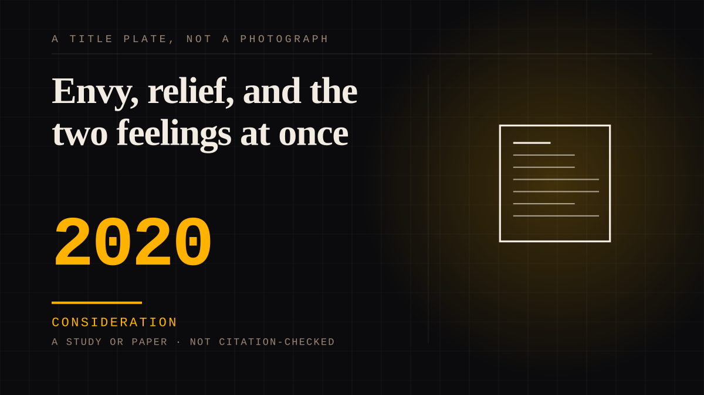

A study or paper · 2020 · Research
Envy, relief, and the two feelings at once
Envy of the object of the attachment and simultaneous relief that it is not actually being withheld from you - the emotional ambivalence that is present in almost every long-term fan relationship and rarely discussed.

It is the most quoted paragraph in the fandom literature and it came out of consumer research rather than psychology, which tells you something. The two feelings are not a contradiction to be resolved. They are the ordinary texture of wanting a thing that cannot be had, and most people have never been asked to describe it because nobody thought it was strange.
Consideration. The part where somebody stops and thinks. The research, the diagnosis, the ethics, the lawsuits, the regulators. Roughly fifty years of arguing with itself about whether this is a relationship.
Where it sits
2010 2010+ · 2020 2026
Provenance · 1 source record(s)
- unverifiedNo specific claim is recorded against this source. The record is a pointer to the work in general; the entry's own prose is the argument and is not sourced line by line.Jussila et al. (2020).
Connected · 3 out, 2 in
Reported as a story
It sits in